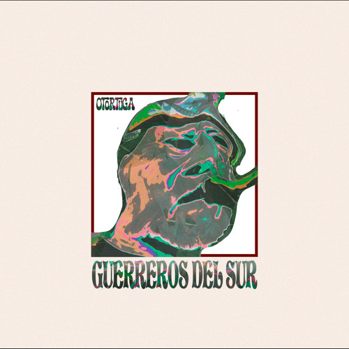
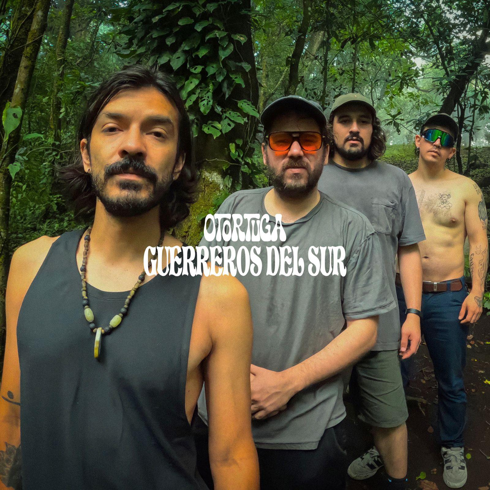
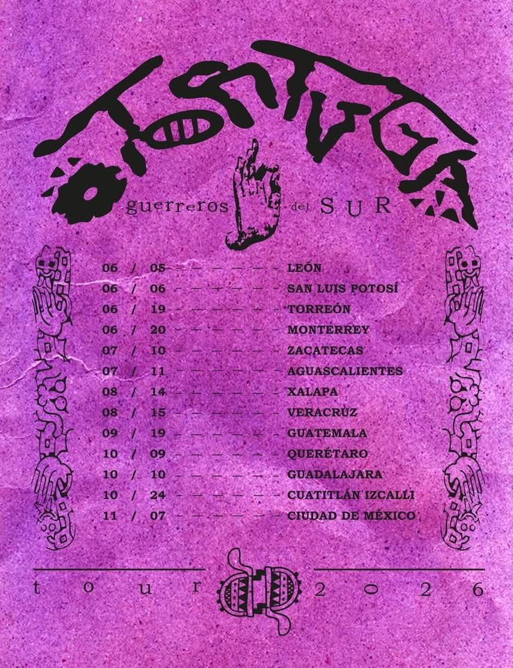

O TORTUGA:
GUERREROS DEL SUR

O Tortuga arranca una nueva etapa con el lanzamiento de su sencillo "Guerreros del Sur". Esta canción marca el pulso de lo que viene para la banda y da nombre a su próxima gira nacional, celebrando más de una década de historia dentro del rock independiente.
Celebrar 10 años de trayectoria regresando a las carreteras con el Tour Guerreros del Sur 2026 es una declaración de principios. Se trata de una serie de fechas especiales que funcionan como reencuentro y expansión de su sonido crudo y honesto.
X AÑOS: CELEBRACIÓN Y RESISTENCIA
En varias de las ciudades de la gira, la banda presenta el concepto "O Tortuga celebrando 10 años", shows pensados como momentos únicos donde conviven himnos de todas sus etapas con la energía actual de su nuevo material.

TOUR GUERREROS DEL SUR 2026
- BAJÍO / NORTE: León, San Luis, Torreón, Monterrey, Zacatecas, Aguascalientes.
- ESTE: Xalapa, Veracruz, Querétaro, Guadalajara.
- CENTRO / SUR: Cuautitlán Izcalli, Guatemala y más por anunciar.
- TICKETS: Disponibles en Passline y otortuga.com

"Guerreros del Sur" no solo es un sencillo, es un punto de partida para una gira que promete ser una de las más importantes en la historia de la banda. El 2026 se perfila como un año clave: la invitación está abierta para formar parte de este recorrido.